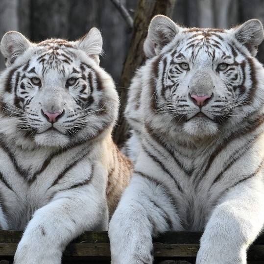
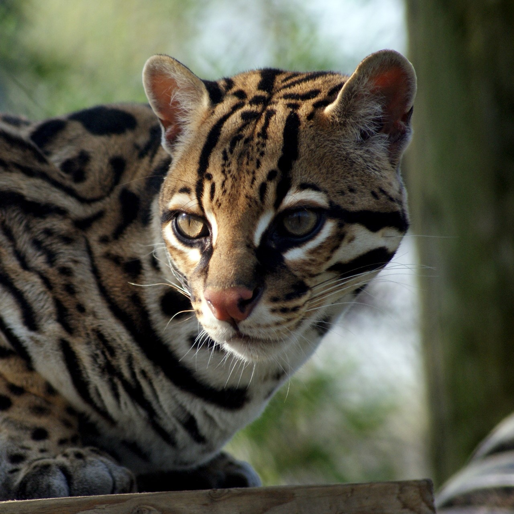
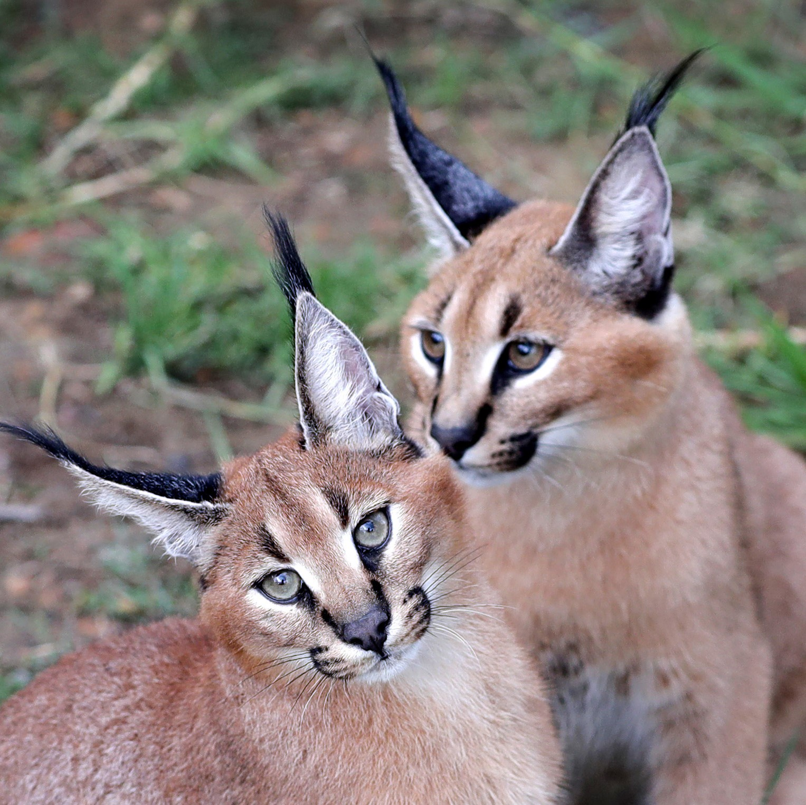
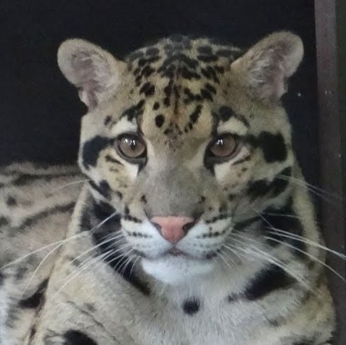
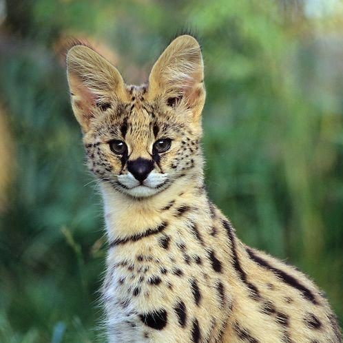

|
Fehér tigris (Panthera tigris)

- Zira és Nermal
- Délkelet-Ázsiában, India középső és déli részein, nagyon ritkán fordulnak elő.
A fehér tigris feltűnő fehér színét egy recesszív allél dupla megjelenése okozza, körülbelül minden 10 000. születésre jut egy fehér kölyök.
Ezen fenotípus megjelenése azonban beltenyésztéssel is elérhető. A különös az, hogy csak a bengáli tigrisnél fordul elő ez a jelenség.
Teste 2,28–3,11 méter hosszú, tömege 72–258 kilogramm (átlagosan 172-196 kilogramm).
- Örökbefogadója: ÁRKÁD Szeged, GYM CLASS Szeged, REGIO Játék
|
Ocelot (Leopardus pardalis)

- Moyo
- Az ocelot Chile kivételével minden dél- és közép-amerikai országban előfordul.
Bundája alapvetően homokszínű-világosbarna (minél nyíltabb területen él, annál világosabb) számos fekete folttal,
amelyek a hátán és a fejrészen vízszintes csíkokká állnak össze, és a farkon is nagyon sűrűek. A hasa alja piszkosfehér-krémszínű.
Testhossza 55-101,5 centiméter, farka 27-45 centiméter hosszú, magassága a vállaknál 45 centiméter, testtömege 6,6-18,6 kilogramm körül mozog.
- Örökbefogadója: Makói Óvoda Kassai utcai tagintézménye
|
|
Karakál (Caracal caracal)

- Dana és Ruan
- Afrikában és Délnyugat-Ázsiában élő macskaféle.Teste vörösesbarna-homokszínű, foltok nélkül (a kölykök még foltosak).
A füle fekete, álla, torka és hasa fehér. Felső ajkát nagy, fekete folt tarkítja, és orra szélétől a szeméig is fekete sáv húzódik.
Rövid szőre szorosan testére simul. Fülén a szőrpamacs dúsabb és hosszabb, mint a hiúzokén. Igen karcsú, a lába meglehetősen hosszú.
Marmagassága 38–50 centiméter, testhossza 60-91,5 centiméter, farka rövid (23-31 centiméter). Testtömege 6–19 kilogramm.
- Örökbefogadója: Baromfiudvar 2002. Kft.
|
Margaritamacska (Felis margarita)

- Mocha és Felix
- A homoki macska elszórtan Észak-Afrika, Nyugat- és Közép-Ázsia területén él.
A homoki macska veszélyeztetett bold. Az állat fej-törzshossza 43-52 centiméter, farokhossza 23-31 centiméter.
Testtömege 1,5-3,4 kilogramm. A macska bundája homokszínű. Farkát kicsit sötétebb gyűrűk övezik.
Füle oldalt helyezkedik el a fején. Lába nagyon rövid, talpát két centiméter hosszú szőrökből álló párna fedi,
így biztosan meg tud állni a forró, laza homokon.
- Örökbefogadója: SZTE Herman Ottó Kollégium tagjai, Tappancs Állatvédő Alapítvány
|
|
Ködfoltos párduc (Neofelis nebulosa)

- Nala
- Elterjedési területe Dél-Kínára, a Himalája keleti részére, Északkelet-Indiára és Délkelet-Ázsiára terjed ki.
61–106 centiméter hosszú, súlya 11–23 kilogramm. Bundája színe világos-sárgásbarnába hajló, gyakran halvány mintázattal, hátán részleges dupla csík fut.
Sárgásbarna, homokszínű bundáját jellegzetes, szabálytalan formájú, leginkább felhőhöz hasonlító,
sötét szélű foltok díszítik – ezekről kapta általános és tudományos nevét is. Teste zömök,
szemfogai az élő macskafélék közül arányosan a leghosszabbak (több mint 5 centiméteresek).
- Örökbefogadója: ÁRKÁD Szeged, Soproni Ifjúsági és Média Klub
|
Szervál (Leptailurus serval)

- Odis
- A szervál Afrika viszonylag gyakori bolda. Hossza 67–100 cm, amelyhez mintegy 24-45 centiméteres farok tartozik.
Tömege 9 és 18 kilogramm között mozog. Marmagassága körülbelül 54-62 centiméter. Karcsú állat, hosszú nyakkal, lábakkal és aránylag rövid farokkal.
Nagy, ovális fülei egymáshoz közel helyezkednek el. Szőrzetének mintázata változatos, általában homokszínű alapon fekete pettyekből áll.
- Örökbefogadója: Alienline Kft.
|